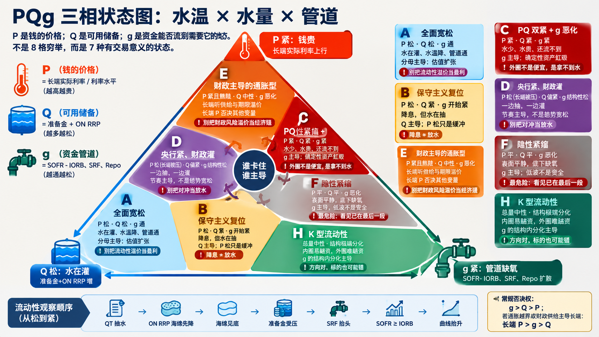

USD LIQUIDITY / PQG TRANSMISSION
先看结构，再看方向。
钱有多少、流向哪里、成本怎样变化。沿着 Q 水量 → g 管道 → P 价格读，不跳步。
正在读取最新数据…
工作日自动更新 · 各指标以真实观测日为准
先把撞字母拆开：本页小写 g 是资金分布与传导；权益“分子 × 分母 × G”里的大写 G 是制度与秩序，两者不是一回事。
FRAMEWORK REFERENCE
PQg 三相状态图
用于理解 A／B／C／D／E／F／H 的相对位置；当前状态仍以页面下方的实时证据与条件判定为准。

CONDITIONAL MAP
组合对照
支持、冲突和待补证据并列展示；不会因为一条数据自动选中唯一状态。
WEEKLY ROUTINE
本周八项检查
每项都给出观测、状态与不能跨越的结论边界。
READ THE DATA
术语、计算口径与来源
缺失、缓存或延迟的数据不填零；代理指标始终标明，相关结论自动降级为待确认。
Q / 水量有效流动性代理为准备金＋ON RRP。TGA 单独观察财政吞吐，不能从合计里再扣一次。
g / 管道SOFR−IORB、Fed 回购投放和 Repo 量价共同确认。季末、缴税日与发债缴款日先按日历效应处理。
P / 水温短端看路径，长端看实际利率和期限溢价。10Y ACM 只作参考，不冒充材料要求的 30Y。
优先顺序常规版本：g ＞ Q ＞ P。若通胀越过硬约束或财政供给主导长端，人工切换为 P 长端 ＞ g ＞ Q。
经验假说Q 领先风险资产约半年只作为观察假说，不作为固定预测或自动交易信号。
数据频率日频保持日频，H.4.1 保持周频；合计只在共同日期计算，不前向填充。